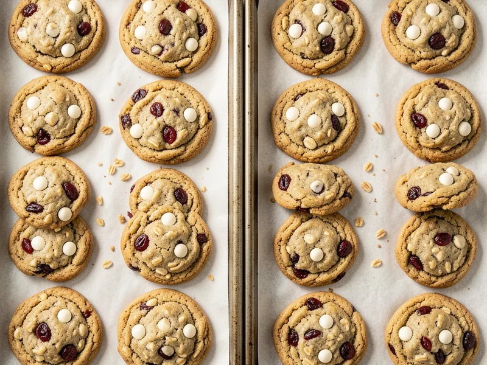

Chewy, hearty oatmeal cookies loaded with sweet white chocolate chips and tangy dried cranberries, warmly spiced with cinnamon and kissed with vanilla.
Estimated from USDA data based on recipe ingredients divided by 30 servings · Per serving (based on 30 servings)
Cookies lose roughly 10–12% of their weight during baking as moisture evaporates from the eggs, butter, and oats.
By Mack
← All Recipes